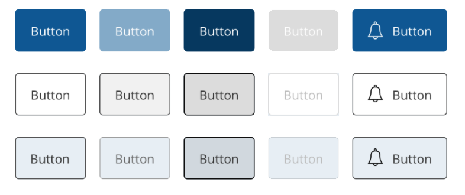
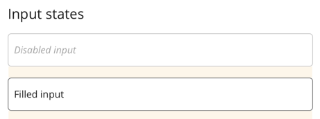

theme-basic
not that basic after all
What is theme-basic?
A comprehensive set of Sass tools to shape and style SUI-Components
How theme-basic styling works?
Provides a global re-writable set of Sass Vars
// --- Colors --- //
$c-primary-light: #80a9ca !default;
$c-primary: #005496 !default;
$c-primary-dark: #003661 !default;
$c-highlighted: #f2cd96 !default;
Parametizable components
Every component may have its own parametized set of !default vars
// Button
$c-button-accent: $c-white !default;
$c-button-accent-hover: $c-white !default;
$c-button-accent-icon-fill: $c-white !default;
$c-button-accent-icon-stroke: $c-white !default;
Cross site global design
Applies global SUI-Components style guide
Open Sourced library
theme-basic is an Open source npm library to style any ReactJS based project available here:
@schibstedspain/theme-basic
// import theme-basic sass vars and mixins
@import '~@schibstedspain/theme-basic/lib/index';
theme-basic Tools: Breakpoints
Mixins with predefined breakpoint values and settings:
$breakpoints: (
xxs: 0,
xs: 320px,
s: 576px,
m: 768px,
l: 992px,
xl: 1200px
) !default;
@include media-breakpoint-up(m) {}
@include media-breakpoint-down(s) {}theme-basic Tools: Colors
Provides a color variarion given a color and an step:
$c-primary-dark: color-variation($c-primary, -1);theme-basic Tools: Forms
Normalizes form elements default styling into a cross site version
